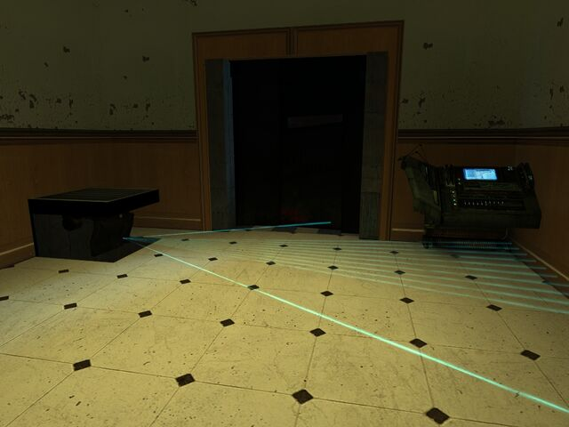

i replayed the all game and have a lot of idea and little things to add .
in the first maps before the “chamber” , there is a lack of emergency rooms .
may be at first level : a room with beds and doctors as well as things doctors use to stop blood and take care of wounded .
at second level , it could be more oriented hardware they use for experiments : like tubes , or laser lamps…
then last one next to the chamber and the police guard . may be more oriented on the hev suit : freeman having to pass a last check before getting with the two scientists
the lab itself could be having turrets in the floor like in hl2 castle :

they would kill some headcrabs or zombies when gordon escape .
later the militaries will keeps them .
of course , i think that fast-and-poisoned headcrab and zombies should be added . as well as antlion ,antlion grubs and workers , may be not to fight them but they could be used in a room or two at the gauss lab .
the monsters could be updated and have more “weapons”
i see the houndeyes with eyes that attack the player [like a taser] and also some “magneto powers” like when they attack they stop the bullets in the air and launch them back from where they come
the vorts when in team could have one that creates shields while others shoot
alien grunts could grab things on the floor : like dead headcrabs , then his little arm pose thing at the level of his mouse and he blows it , that could be the bullsquid fluid or some snarks nests
the little arms of garg could launch some boomerangs made directly on his belly . he could use that to kill an hidden player ;’]
the barnacle when he eats , could at the end launch a lot of eggs every where around him , then they get on floor or wall and use the tongue to go up and stay .
may be the bullsquid could catch them on the floor and use its tail to launch them against the player
the tubes and the radiactive fluids are also not so well “made” . i mean that it is cool to consider that the lab of the chamber produce a lot of radioactive water and use a lot of water , that is why we see big tubes every where and in the train part too . some place could be made so we see water or radioactive liquids being “cleaned” or used .
the part before the gauss lab having only water and no more “green water” because there they do experiments on life [ while it is not like that even in hl]
last thing about gauss munitions [ or 357] that are every where and even in militaries hands while they do not use them . weapons using them are “just created” by black mesa scientists. so they have to be “repositionned” or deleted for some
i think that should be main point to focus to finish to create a great game .